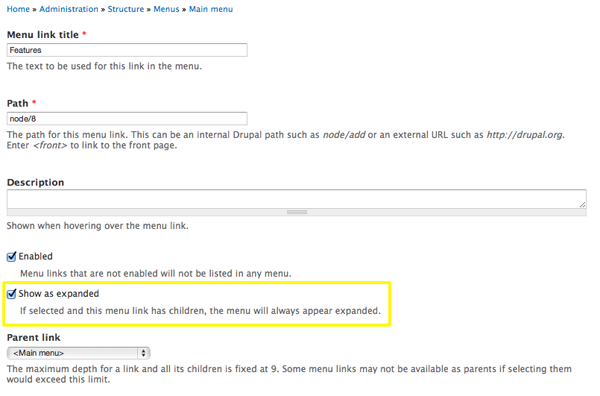
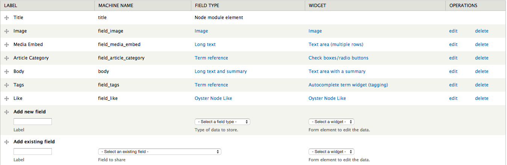
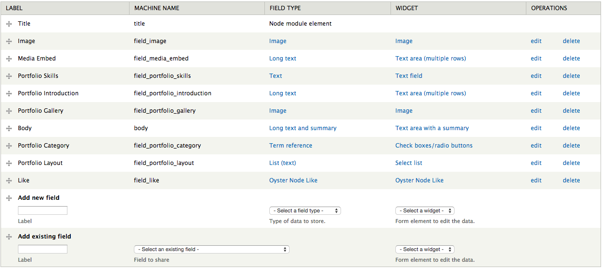
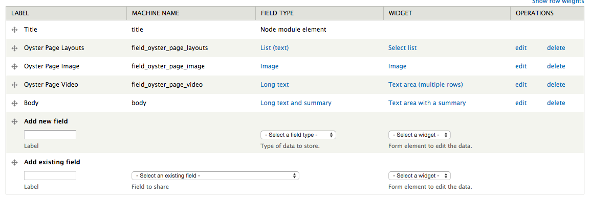

If you are looking for the best photo theme with unlimited capabilities yet easy editable - our new Oyster Drupal Theme will help to break a new ground for your web project! Modern design and responsive framework in combination with maximum flexibility allows to customize this theme in the way you like. For theme support that cannot be found in this documentation, please visit our support forum.
Updated: 11/05/14
Author: Refaktor
Docs powered by: TOC
Original design by
mad_dog
There are two ways Oyster can be installed. For existing sites that already have content, the first method will only involve the installation and activation of the theme. The second option includes a full Drupal 7 install with the same SQL database file used to create the theme demo. Please choose which installation method works best for you and follow the instructions. We do highly recommend you perform the full install if you are new to Drupal or don't have any existing content you need to work with.
The following steps are designed for people that have experience manually installing Drupal and importing databases. If you do not feel comfortable performing these steps yourself, contact your server administrator for help. NOTE this option is for a completely new Drupal install. Do not import the provided SQL file into an existing Drupal database or you will lose all of your data!
Oyster comes with a shell sub-theme called Oyster_sub that you can use to make customizations to the style and template structure of the parent theme without having to modify the parent theme itself. This is useful if you plan on updating the parent theme as we release updates on ThemeForest. If you performed the full install you will already see oyster_sub in the list of themes available. If you did the standalone install you can find the oyster_sub.zip file in the root of the download files and you can install it like any other theme.
There is an empty stylesheet already defined which is /css/custom.css (inside the oyster_sub folder). Use this file to add all of the custom CSS that you plan on using. You can also copy any template file from the /oyster/tpl folder into the /Oyster_sub folder and it will listen to the sub-themes template file first. This will allow you to update the parent theme as we make updates without losing your customizations. Just pay attention to the changelog and compare the parent theme files with yours and make any adjustments as needed.
You will need to configure the sub-themes theme settings separately from the parent theme's, so visit /admin/appearance/settings/oyster_sub to configure the theme settings for the sub-theme. You also need to configure the block regions separately.
Below are the modules required to fully utilize the theme:
This is the core helper module for the Oyster theme and is required by the Slider, Gallery and Striped modules. It has no settings and needs no additional configuration.
This module creates a custom entity called Oyster Slider which can be used to create a slider like the one seen on the demo homepage. Once installed, you can navigate to /admin/structure/oyster-slider or simply click the Structure link in your admin menu and click Oyster Sliders. Once there click the "Add oyster slider" link and you can begin creating your slider. Enter a name for your slider and then proceed to use the following fields:
This field accepts a slide title, caption and image. You can add additional slides by pressing the "add another item" button. There is no limit to how many slides the slider can use.
This optional field allows you to add social icons and links which will open in an overlay over the slider when the appropriate button is clicked in the slider controls. Simply select the icon you want from the dropdown and enter your link.
Finally you can configure the overall settings for the slider. You can adjust the time between the slide animation, the effect, autoplay, enable/disable the controls and the social icon button.
The Oyster Slider module automatically creates a block for every slider you create. Visit /admin/structure/block and add your slider block(s) to the region of your choice. All Oyster Sliders will be labeled Oyster Slider: Your Title and you can use the block visibility settings to dictate what nodes you want the slider to be visible on.
This module creates a custom entity called Oyster Gallery which can be used to create a gallery like the one seen on the following page. Once installed, you can navigate to /admin/structure/oyster-gallery or simply click the Structure link in your admin menu and click Oyster Galleries. Once there click the "Add oyster gallery" link and you can begin creating your gallery. Enter a name for your gallery and then proceed to use the following fields:
This field accepts a gallery title and image. You can add additional items by pressing the "add another item" button. There is no limit to how many items the gallery can use.
Here you can select the layout you want to use for your gallery. You have eight options to choose from:
The Oyster Gallery module automatically creates a block for every gallery you create. Visit /admin/structure/block and add your gallery block(s) to the region of your choice. All Oyster Galleries will be labeled Oyster Gallery: Your Title and you can use the block visibility settings to dictate what nodes you want the gallery to be visible on.
This module creates a custom entity called Oyster Striped which can be used to create a Striped block like the one seen on the following page. Once installed, you can navigate to /admin/structure/oyster-striped or simply click the Structure link in your admin menu and click Oyster Striped. Once there click the "Add oyster striped" link and you can begin creating your striped block. Enter a name for your item and then proceed to use the following fields:
This field accepts a title, caption, URL and image. You can add additional items by pressing the "add another item" button. There is no limit to how many items the striped block can use but we recommend a maximum of 6.
This field lets you set your striped layout which can be either horizontal or vertical.
The Oyster Striped module automatically creates a block for every item you create. Visit /admin/structure/block and add your block(s) to the region of your choice. All Oyster Striped blocks will be labeled Oyster Striped: Your Title and you can use the block visibility settings to dictate what nodes you want the block(s) to be visible on.
If you used the "theme only" option to install the theme on an existing install that already has content we recommend you use our Oyster Features module to create the additional content types, fields and Views needed to fully utilize the theme. You will find it in the /assets folder in the download files. This module is a custom Features module and will not run without it. We recommend copying all of the modules from the /modules folder into your install if you do not already have them. After you have all the modules simply upload and activate the Oyster Features module and the content types, fields and views will automatically be created.
Oyster has a block region called Header Menu which can be used to add any menu block you like. The demo simply uses the default Main Menu block but you can create a custom menu block if you like.
Note: make sure to check the "show as expanded" box on all parent items with children to ensure the dropdown menu works correctly.
Oyster uses the default Article content type to handle the blog content with a few additional fields. Please continue reading for an overview of the fields, templates and views used for articles in Oyster.
Fields:
Template files:
Views:
The demo uses two different blog layouts: masonry and standard. If you did a theme only install you can use either the Oyster Features module or the views export code found in /assets/views in the ThemeForest downloads file to quickly create these views. The standard with left/right sidebar displays article teasers but the masonry is a collection of fields that uses a field rewrite option to display the layout.
Oyster uses a custom content type called Portfolio to display the various Portfolio pages seen on the demo. Please continue reading for an overview of the fields, templates and views used for Portfolios in Oyster.
Fields:
ribbon|Fullscreen Ribbon full_no_info|Fullscreen Without Info full_with_info|Fullscreen With Info simple|Simple
Template files:
Views:
The demo uses several different portfolio layouts which are provided by the Oyster Utilities module. If you did a theme only install you can use either the Oyster Features module or the views export code found in /assets/views in the ThemeForest downloads file to quickly create the Portfolio view and corresponding displays.
Oyster uses a custom content type called Oyster Page to handle a couple different layouts seen on the demo. You can have a fullscreen image or video background, or an image with some fullscreen content. Continue reading below for a rundown of the fields and templates used with this content type:
Fields:
fullscreen|Fullscreen Page image|Image Background video|Video Background
Template files:
There are several blocks seen on the demo that are just some simple HTML markup that didn't really warrant a dedicated content type and node templates. We will outline each of those for you here and provide some sample markup you can use in your blocks to replicate what you see. Keep in mind you will want to use the full HTML text filter when using any of this markup.
<div class="widget_flickr"> <div class="flickr_widget_wrapper"><script src="http://www.flickr.com/badge_code_v2.gne?count=8&display=latest&size=s&layout=x&source=user&user=91205275@N03"></script> </div> </div>
<div class="google-maps"><iframe src="https://www.google.com/maps/embed?pb=!1m14!1m12!1m3!1d193572.00379171!2d-73.97319698171047!3d40.70563080000017!2m3!1f0!2f0!3f0!3m2!1i1024!2i768!4f13.1!5e0!3m2!1sen!2sus!4v1414273731552" width="1170" height="400" frameborder="0" style="border:0"></iframe></div>
<div class="socials_wrapper"> <ul class="socials_list"> <li><a class="ico_social_dribbble" target="_blank" href="http://dribbble.com/" title="Dribbble"></a></li> <li><a class="ico_social_gplus" target="_blank" href="https://plus.google.com/" title="Google+"></a></li> <li><a class="ico_social_vimeo" target="_blank" href="https://vimeo.com/" title="Vimeo"></a></li> <li><a class="ico_social_pinterest" target="_blank" href="http://pinterest.com" title="Pinterest"></a></li> <li><a class="ico_social_facebook" target="_blank" href="http://facebook.com" title="Facebook"></a></li> <li><a class="ico_social_twitter" target="_blank" href="http://twitter.com" title="Twitter"></a></li> <li><a class="ico_social_instagram" target="_blank" href="http://instagram.com" title="Instagram"></a></li> </ul> </div>
Oyster includes Font Awesome which you can use in any of your node/block content. Refer to the full icon list here which includes example markup.
The Oyster theme settings can be accessed via /admin/appearance/settings/ and then clicking on the name of your active theme. There are four sections, including the standard Drupal settings. Go through each tab and configure the settings to your liking.
Oyster features 13 block regions where you can add your blocks. Visit yourdomain.com/admin/structure/block to add your own content to the defined block regions. Press "Add Block" to create a new custom blog, or select an existing block from the Disabled list below the defined block regions.
Thank you very much for purchasing the Oyster Responsive Drupal 7 theme. Once again if you have any issues or feedback please connect via the ThemeForest author page. Enjoy using Oyster!
© 2014 Refaktor.